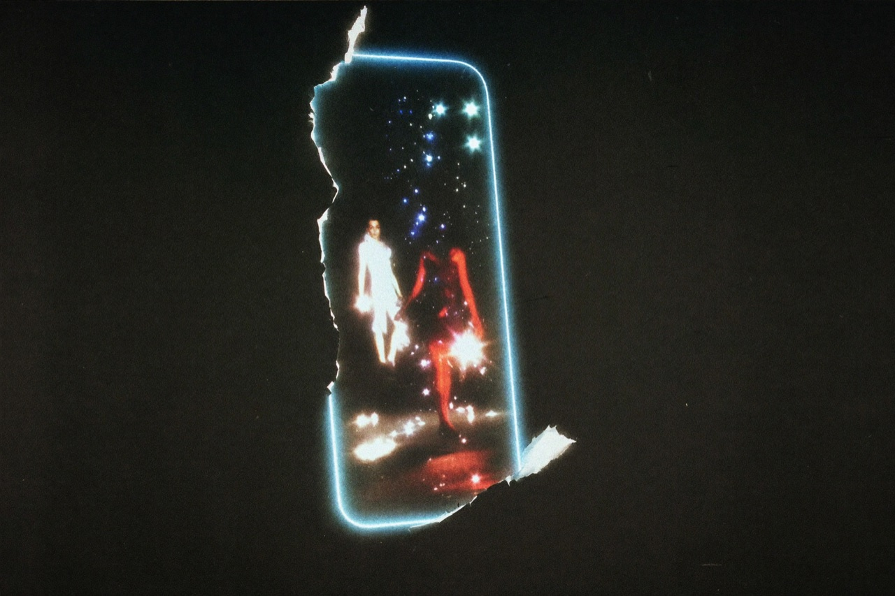

글로벌 콘텐츠 테크 기업 톤코퍼레이션(TON Corporation)이 텔레그램 기반 숏폼 드라마 플랫폼 톤티비(TonTV)를 오는 2026년 9월 전 세계에 정식 오픈한다. 별도의 앱 설치나 복잡한 회원가입 없이, 약 10억 명에 달하는 텔레그램 이용자가 텔레그램 계정 하나만으로 즉시·무료로 숏폼 드라마를 즐기는 차세대 OTT다.
이번 발표는 톤코퍼레이션 최고기술책임자(CTO) 토니(Tony)를 통해 공식화됐다. 핵심 메시지는 단순하다. 보는 데 필요한 모든 마찰을 없앴다는 것. 검색도, 다운로드도, 설치도, 가입도, 결제정보 입력도 사라졌다. 남은 것은 ‘드라마를 본다’는 행위 그 자체뿐이다.
진입 장벽을 통째로 허물다
기존 OTT 서비스는 ‘앱스토어 검색 → 다운로드 → 설치 → 회원가입 → 결제정보 입력’이라는 긴 진입 단계를 요구한다. 그 사이 잠재 시청자의 상당수가 이탈한다. 톤티비는 이 과정을 ‘텔레그램 내 미니앱 실행 → 즉시 무료 시청’ 두 단계로 압축한다.
넷플릭스, 디즈니플러스 등 글로벌 대형 OTT가 수년간 막대한 비용을 들여 확보해 온 사용자 접근성을, 톤티비는 서비스 첫날부터 10억 명 규모로 확보한 채 출발한다. 이는 사용자 획득 비용을 획기적으로 낮추는 동시에, 텔레그램의 그룹·채널을 통한 자연스러운 입소문 확산으로 초기 성장 속도를 극대화하는 결정적 요소다.

시청 패턴이 바뀌었다
숏폼 콘텐츠는 이미 전 세계 미디어 소비의 중심으로 자리 잡았다. 짧은 러닝타임, 높은 시청 완주율, 모바일에 최적화된 몰입감을 앞세워 특히 젊은 세대를 중심으로 폭발적으로 성장하고 있다. 톤티비는 이 흐름의 한가운데에서 2분 내외의 숏폼 드라마를 핵심 콘텐츠로 내세운다.
짧지만 강렬한 스토리와 회차를 거듭하며 완성되는 서사 구조로, 톤티비는 ‘한 번 보면 멈출 수 없는’ 새로운 시청 경험을 제공한다. 액션·멜로·코믹·사극을 넘나드는 미니 드라마가 빠른 호흡으로 이어진다.
3년의 준비, 그리고 9월
톤티비는 하루아침에 등장한 서비스가 아니다. 톤코퍼레이션은 지난 3년간 플랫폼 기술 개발, 글로벌 콘텐츠 파트너십 구축, 현지 운영 체계 설계에 역량을 집중하며 정식 오픈을 준비해 왔다.
“지난 3년간 우리는 ‘드라마를 가장 쉽고, 가장 즐겁게 볼 수 있는 방법’을 만드는 데 모든 역량을 집중했다. 텔레그램이라는 10억 명의 운동장 위에서, 톤티비는 누구나 계정 하나로 무료로 즐기는 숏폼 드라마의 새로운 기준을 제시할 것이다.” — 토니(Tony), 톤코퍼레이션 CTO
톤티비는 2026년 9월 정식 오픈을 기점으로 콘텐츠 라인업과 서비스 지역을 빠르게 확대해 나갈 계획이다. 숏폼 드라마를 기반으로 라이브 스트리밍 등 실시간 콘텐츠로 영역을 넓히고, 각국 현지 지사를 거점으로 한 글로벌 확장에 속도를 낼 방침이다.
블로그 전체 보기